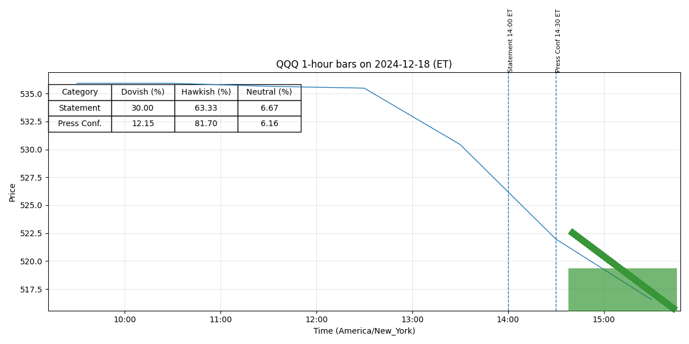

For release at 2:00 p.m. EST December 18, 2024 Recent indicators suggest that economic activity has continued to expand at a solid pace. (0.468)
In support of its goals, the Committee decided to lower the target range for the federal funds rate by 1/4 percentage point to 4-1/4 to 4-1/2 percent. (0.537)
In considering the extent and timing of additional adjustments to the target range for the federal funds rate, the Committee will carefully assess incoming data, the evolving outlook, and the balance of risks. (0.420)
The Committee will continue reducing its holdings of Treasury securities and agency debt and agency mortgage‑backed securities. (0.610)
The Committee is strongly committed to supporting maximum employment and returning inflation to its 2 percent objective. (0.551)
Voting for the monetary policy action were Jerome H. Powell, Chair; John C. Williams, Vice Chair; Thomas I. Barkin; Michael S. Barr; Raphael W. Bostic; Michelle W. Bowman; Lisa D. Cook; Mary C. Daly; Philip N. Jefferson; Adriana D. Kugler; and Christopher J. Waller. (0.798)
Voting against the action was Beth M. Hammack, who preferred to maintain the target range for the federal funds rate at 4-1/2 to 4-3/4 percent. (0.436)
For release at 2:00 p.m. EST December 18, 2024 Decisions Regarding Monetary Policy Implementation The Federal Reserve has made the following decisions to implement the monetary policy stance announced by the Federal Open Market Committee in its statement on December 18, 2024: • The Board of Governors of the Federal Reserve System voted unanimously to lower the interest rate paid on reserve balances to 4.4 percent, effective December 19, 2024. (0.504)
• As part of its policy decision, the Federal Open Market Committee voted to direct the Open Market Desk at the Federal Reserve Bank of New York, until instructed otherwise, to execute transactions in the System Open Market Account in accordance with the following domestic policy directive: "Effective December 19, 2024, the Federal Open Market Committee directs the Desk to: (0.512)
o Conduct standing overnight repurchase agreement operations with a minimum bid rate of 4.5 percent and with an aggregate operation limit of $500 billion. (0.728)
o Conduct standing overnight reverse repurchase agreement operations at an offering rate of 4.25 percent and with a per-counterparty limit of $160 billion per day. (0.756)
Setting this rate at the bottom of the target range for the federal funds rate is intended to support effective monetary policy implementation and the smooth functioning of short-term funding markets. (0.691)
o Roll over at auction the amount of principal payments from the Federal Reserve's holdings of Treasury securities maturing in each calendar month that exceeds a cap of $25 billion per month. (0.508)
o Reinvest the amount of principal payments from the Federal Reserve's holdings of agency debt and agency mortgage-backed securities (MBS) received in each calendar month that exceeds a cap of $35 billion per month into Treasury securities to roughly match the maturity composition of Treasury securities outstanding. (0.545)
o Allow modest deviations from stated amounts for reinvestments, if needed for operational reasons. (0.756)
o Engage in dollar roll and coupon swap transactions as necessary to facilitate settlement of the Federal Reserve's agency MBS transactions."" (0.559)
(more) -2- • In a related action, the Board of Governors of the Federal Reserve System voted unanimously to approve a 1/4 percentage point decrease in the primary credit rate to 4.5 percent, effective December 19, 2024. (0.439)
In taking this action, the Board approved requests to establish that rate submitted by the Boards of Directors of the Federal Reserve Banks of Boston, New York, Philadelphia, Cleveland, Richmond, Atlanta, Chicago, and San Francisco. (0.717)
This information will be updated as appropriate to reflect decisions of the Federal Open Market Committee or the Board of Governors regarding details of the Federal Reserve's operational tools and approach used to implement monetary policy. (0.603)
For release at 2:00 p.m. EST November 7, 2024
Recent indicators suggest that economic activity has continued to expand at a solid pace. (0.470)
In support of its goals, the Committee decided to lower the target range for the federal
funds rate by 1/4 percentage point to 4-1/2 to 4-3/4 percent. (0.537)
In considering additional
adjustments to the target range for the federal funds rate, the Committee will carefully assess
incoming data, the evolving outlook, and the balance of risks. (0.425)
The Committee will continue
reducing its holdings of Treasury securities and agency debt and agency mortgage‑backed
securities. (0.610)
The Committee is strongly committed to supporting maximum employment and
returning inflation to its 2 percent objective. (0.551)
Voting for the monetary policy action were Jerome H. Powell, Chair; John C. Williams,
Vice Chair; Thomas I. Barkin; Michael S. Barr; Raphael W. Bostic; Michelle W. Bowman; Lisa
D. Cook; Mary C. Daly; Beth M. Hammack; Philip N. Jefferson; Adriana D. Kugler; and
Christopher J. Waller. (0.794)
For release at 2:00 p.m. EST November 7, 2024
Decisions Regarding Monetary Policy Implementation
The Federal Reserve has made the following decisions to implement the monetary policy stance
announced by the Federal Open Market Committee in its statement on November 7, 2024:
• The Board of Governors of the Federal Reserve System voted unanimously to lower the
interest rate paid on reserve balances to 4.65 percent, effective November 8, 2024. (0.498)
• As part of its policy decision, the Federal Open Market Committee voted to direct the Open
Market Desk at the Federal Reserve Bank of New York, until instructed otherwise, to
execute transactions in the System Open Market Account in accordance with the following
domestic policy directive:
"Effective November 8, 2024, the Federal Open Market Committee directs the Desk to: (0.516)
Conduct standing overnight repurchase agreement operations with a minimum bid
o
rate of 4.75 percent and with an aggregate operation limit of $500 billion. (0.721)
Conduct standing overnight reverse repurchase agreement operations at an
o
offering rate of 4.55 percent and with a per-counterparty limit of $160 billion per
day. (0.759)
Roll over at auction the amount of principal payments from the Federal Reserve's
o
holdings of Treasury securities maturing in each calendar month that exceeds a
cap of $25 billion per month. (0.508)
Reinvest the amount of principal payments from the Federal Reserve's holdings of
o
agency debt and agency mortgage-backed securities (MBS) received in each
calendar month that exceeds a cap of $35 billion per month into Treasury
securities to roughly match the maturity composition of Treasury securities
outstanding. (0.536)
Allow modest deviations from stated amounts for reinvestments, if needed for
o
operational reasons. (0.769)
Engage in dollar roll and coupon swap transactions as necessary to facilitate
o
settlement of the Federal Reserve's agency MBS transactions."" (0.552)
• In a related action, the Board of Governors of the Federal Reserve System voted
unanimously to approve a 1/4 percentage point decrease in the primary credit rate to 4.75
percent, effective November 8, 2024. (0.437)
In taking this action, the Board approved requests
to establish that rate submitted by the Boards of Directors of the Federal Reserve Banks
of Boston, New York, Philadelphia, Cleveland, Richmond, Atlanta, Chicago,
Minneapolis, Dallas, and San Francisco. (0.712)
(more)
-2-
This information will be updated as appropriate to reflect decisions of the Federal Open Market
Committee or the Board of Governors regarding details of the Federal Reserve's operational tools
and approach used to implement monetary policy. (0.625)
Since earlier in the year, labor market conditions have generally eased, and the unemployment rate has moved up but remains low. (0.403)
Inflation has made progress toward the Committee’s 2 percent objective but remains somewhat elevated. (0.445)
The Committee seeks to achieve maximum employment and inflation at the rate of 2 percent over the longer run. (0.612)
The Committee judges that the risks to achieving its employment and inflation goals are roughly in balance. (0.418)
The economic outlook is uncertain, and the Committee is attentive to the risks to both sides of its dual mandate. (0.489)
In assessing the appropriate stance of monetary policy, the Committee will continue to monitor the implications of incoming information for the economic outlook. (0.775)
The Committee would be prepared to adjust the stance of monetary policy as appropriate if risks emerge that could impede the attainment of the Committee’s goals. (0.721)
The Committee’s assessments will take (more) -2- into account a wide range of information, including readings on labor market conditions, inflation pressures and inflation expectations, and financial and international developments. (0.548)
-0- Attachment For media inquiries, please email media@frb.gov or call 202-452-2955. (0.646)
Redeem Treasury coupon securities up to this monthly cap and Treasury bills to the extent that coupon principal payments are less than the monthly cap. (0.398)
More information regarding open market operations and reinvestments may be found on the Federal Reserve Bank of New York's website. (0.801)